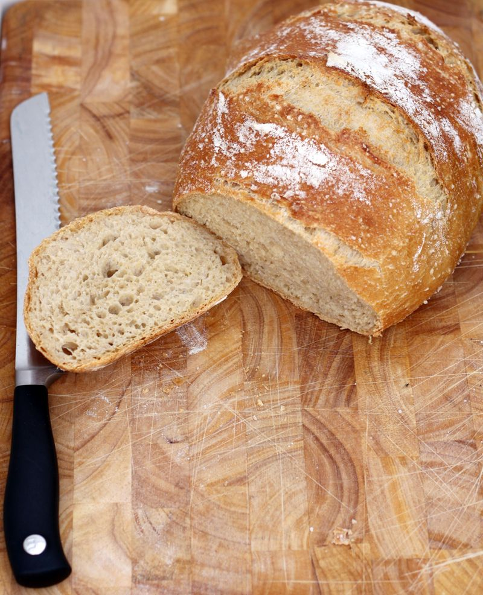

I chose this project because I am a chef and love to bake bread. I created this page with little tid bits about baking bread with the basic bread recipe that I follow. It is an easy full proof recipe that everyone should try. To me being able to bake simple recipes is what cooking is all about.
Want a link to the orginal recipe? Click Here!